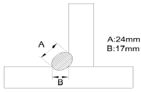
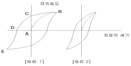
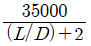
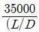
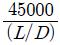
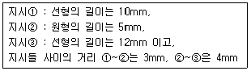

1과목: 비파괴검사 개론
1. 홀 효과(hall effect)를 이용하는 비파괴 검사법은?
2. 다음 비파괴검사 방법 중 결함의 형상을 추정하기 곤란한 검사방법은?
3. 누설검사를 계획하거나 시방서를 작성할 때 이용할 누설 검사의 선택에서 가장 먼저 생각할 점은?
4. 방사선투과시험에서 반가층이란?
5. 초음파탐상시험의 장점이 아닌 것은?
6. 충격시험에 대한 설명으로 옳은 것은?
7. 철-탄소 평형상태도에서 공정반응의 온도로 옳은 것은?
8. WC 분말과 Co 분말을 압축성형한 후 약 1400℃로 소결시켜 바이트와 같은 공구에 이용되는 합금은?
9. 단결정을 이용한 집적회로용 금속재료로 전자적 성능이 가장 좋은 원소는?
10. 오스테나이트계 스테인리스강의 특성에 관한 설명 중 틀린것은?
11. 일반적으로 특수강에 첨가되는 특수 원소의 효과에 대한 설명으로 틀린 것은?
12. 가장 높은 온도를 측정할 수 있는 열전대 재료는?
13. Fe의 비중과 용융점으로 옳은 것은?
14. Cartrige brass에 대한 설명으로 틀린 것은?
15. 다이캐스팅용 재료로 가장 적합한 것은?
16. 용접 비드의 가장자리에서 모재 쪽으로 발생하는 균열은?
17. 그림과 같은 필릿 용접에서 용접부의 이론 목두께는 약 몇 mm인가?

18. 서브머지드 아크 용접의 특징에 대한 설명으로 옳은 것은?
19. 저수소계 피복아크 용접봉의 건조온도 및 건조시간으로 다음 중 가장 적합한 것은?
20. 불활성가스 텅스텐 아크용접(TIG용접)에서 아크쏠림(Arc Blow 또는 Magnetic Blow) 현상이 일어나는 원인이 아닌것은?
2과목: 자기탐상검사 원리
21. 자화 케이블을 직접 시험체에 감아 코일법으로 검사한 경우 잘 나타나는 의사지시모양은?
22. 자분탐상시험시 중심도체법을 사용할 경우 자속밀도가 가장 높은 것은?
23. 다음 중 탈자를 하지 않고 재시험을 하여도 무방한 경우는?
24. 자기탐상시험에서 자기장이 균열의 방향과 수평으로 형성 될 때 어떤 결과가 나타나는가?
25. 극간법 자분탐상시험의 설명으로 옳은 것은?
26. 다음 중 무관련지시가 발생되는 이유로 적당하지 않은 것은?
27. 자기탐상시험에서 잔류자장이 도움이 되는 경우는?
28. 다음 중 [재료 1]의 자기이력곡선에서 잔류자기를 나타내는 것은 어느 점인가?

29. 극간법 자분탐상시험의 설명으로 옳은 것은?
30. 납 또는 구리망사를 사용하여 전극의 접촉면이나 축통전법의 접촉면의 면적을 넓혀 주는 주된 이유는?
31. 다음 중 단조품의 자분탐상시험시 소성이 적은 변화에 의해 나타나는 판정 대상이 아닌 자분모양으로써 과도한 전류를 사용한 경우에 잘 나타나므로 자화전류를 낮추어 재시험하면 사라지는 자분모양은 무엇인가?
32. 자속밀도를 영(zero)으로 하기 위한 자화력을 무엇이라 하는가?
33. 영구자석에서 자속선 또는 자력선을 설명한 것은?
34. 외경 50mm인 운통형 시험체의 원주방향 결함을 검출하는 데 적합한 자분탐상시험의 자화 방법은?
35. 석유저장 탱크나 구형 탱크와 같은 대형구조물의 용접부균열 등의 불연속을 탐상하기 위하여 널리 사용되는 자분 탐상 검사방법은?
36. 자계의 세기가 1000A/m에서 자속밀도 0.1 Wb/m2 인 자성체의 투자율[H/m]은 얼마인가?
37. 의사모양의 판별에 관한 내용으로 자분탐상시험만으로는 판별이 어려워 표면 연마 후 약품으로 부식시켜 금속 현미경 등의 미시적 시험 또는 거시적 시험으로 조사해야 하며 재시험은 침투탐상시험 등 다른 방법으로 확인해야 하는 의사모양은 다음 중 어느 것인가?
38. 자분탐상시험에서 작업안전과 관련하여 주의할 내용과 거리가 가장 먼 것은?
39. 건식법에 의한 자분탐상시험의 설명으로 잘못된 것은?
40. 강자성 물질의 시험체에 자화력을 계속 증가시켜도 자계의 세기가 더 증가하지 않는다면 이 때의 현상을 설명한 것으로 옳은 것은?
3과목: 자기탐상검사 시험
41. 습식자분의 점도(Viscosity)는 38ﾟC(100ﾟF)에서 몇 Centistokes를 초과해서는 안되는가?
42. 탄소함유량이 높은 공구강과 스프링강 등 보자력이 높고, 특히 나사부 등 복잡한 형상부에 적용되는 자분탐상시험 방법은?
43. 잔류법으로 검사할 때 가장 많이 검출되는 무관련지시는?(오류 신고가 접수된 문제입니다. 반드시 정답과 해설을 확인하시기 바랍니다.)
44. 거친 단조품의 자분탐상검사에서 쉽게 발견될 수 있는 결함은?
45. 코일법으로 자화할 때 고탄소강과 저탄소강의 시험체에 적용하는 전류 크기를 비교한 것으로 옳은 것은?
46. 자동 자분탐상장치를 설계할 때 고려하지 않아도 되는 것은?
47. 자분탐상검사에서 시험체 표면 결함의 검출에 사용되는 준류 형태 중 가장 우수한 것은?
48. 자분탐상검사에서 결함의 검출효율이 증대되는 조건이 아닌것은?
49. 모든 검사조건과 피막의 두께가 동일하다면 다음 중 탐상감도에 가장 적은 영향을 주는 재질의 중류는?
50. 자분탐상시험 중 안전을 위해 고려할 대상이 아닌 것은?
51. 대형 구조물의 용접부위를 극간법으로 자분탐상할 때 직류보다 교류를 사용하는 주된 이유는?
52. 자분탐상검사를 종료한 후, 필요에 의해서 탈자하고자 할때 이용되는 탈자 방법의 설명으로 틀린 것은?
53. 자분탐상시험에 적용하는 자분에 대한 설명으로 옳은 것은?
54. 다음 강용접부를 자분탐상검사할 때 올바른 적용은?
55. 퀜칭(Quenching)한 철강재의 시험체는 어닐링(Annealing)한 철강재의 시험체보다 자화 전류값이 얼마나 요구 되는가?
56. 하나는 자성체이고, 다른 하나는 비자성체인 동일한 치수의 전도체에 동일 크기의 전류를 통전시켰을 때 두 개의 전도체 주위에 발생하는 자성은 어떻게 되는가?
57. 자분 검사액을 오래 사용하기 위한 방법으로 가장 옳은 것은?
58. 대형 구조물의 맞대기 용접부를 교류 극간법으로 자분 탐상시험하는 경우 가장 주의해야 할 사항은?
59. 시험체에 유도전류를 발생시키므로써 시험체에 자장을 형성하는 자화장치는?
60. 다음 중 최소 1/250초 정도의 짧은 시간에 시험체를 자화시킬 수 있는 자화 전원장치는?
4과목: 자기탐상검사 규격
61. 철강 재료의 자분탐상 시험방법 및 자분모양의 분류(KS D0213)에 따라 A형 표준시험편을 시방서상에 “(A2-7/50)×2”(직선형)로 표기하였다면 다음 설명 중 옳은 것은?(오류 신고가 접수된 문제입니다. 반드시 정답과 해설을 확인하시기 바랍니다.)
62. 보일러 및 압력용기에 대한 자분 탐상검사(ASME Sec. V Art. 7)에서 코일법 (고충전률 코일)에 의한 선형자화시 Ampere-turn 수는? (단, 피검사체: 길이 = 457mm, 직경 = 114mm 이다.)
63. 철강 재료의 자분탐상 시험방법 및 자분모양의 분류(KS D0213)에 따라 A형 표준시험편의 사용법으로 틀린 것은?
64. ASME Sec VII Div.1에 의거하여 자분탐상검사를 수행하였을 때, 길이가 각각 5mm, 3mm, 1mm인 선형지시 3개와 크기가 각각 3mm, 1.5mm인 원형지시 2개가 검출되었고 모든 지시들 사이의 간격이 1mm 이었다면 평가대상이 되는 지시 길이의 총합은?
65. 철강 재료의 자분탐상 시험방법 및 자분모양의 분류(KS D0213)에서 모양 및 집중성에 따라 자분모양을 분류 할 때 옳게 표현된 것은?
66. 철강 재료의 자분탐상 시험방법 및 자분모양의 분류(KS D0213)에 따라 자분탐상시험을 하기 위하여 자분의 자성을 점검하고자 한다. 다음 중 측정방법으로 틀린 것은?
67. 보일러 및 압력용기에 대한 자분탐상검사(ASME Sec. V Art.7)에 따라 길이 대 지름 비가 2보다 작은 부품을 코일로 선형자화 시키고자 할 때 옳은 것은?

을 이용하여 자화전류를 구한다.
을 이용하여 자화전류를 구한다.
을 이용하여 자화전류를 구한다.68. 철강 재료의 자분탐상 시험방법 및 자분모양의 분류(KS D 0213)의 탐상 내용에 대한 설명으로 틀린 것은?
69. 철강 재료의 자분탐상 시험방법 및 자분모양의 분류(KS D0213)에 따라 자분탐상시험하고 시험기록을 작성하는 경우 자분의 모양에 대한 기재 내용에 포함되지 않는 것은?
70. V Art.7)에 따라 코일법(고충전률 코일)으로 성형자화 기법을 적용하고자 한다. 시험체의 길이가 250mm 이고 지름이 50mm 이라면 필요한 자화전류는 얼마인가?(단, 권수는 5이다.)
71. 보일러 및 압력용기에 대한 자분탐상검사(ASME Sec. v Art. 7)의 요크법에서 영구자석 요크를 사용하는 경우 사용 최대 극간 거리에서 견인력(ligting power)의 최소 값은?(오류 신고가 접수된 문제입니다. 반드시 정답과 해설을 확인하시기 바랍니다.)
72. ASME Sec. VIII Div. 1 Appendx 6에 따라 용접부에 나타난 지시를 평가를 할 경우 합격으로 판정할 수 있는 것은?
73. 길이가 다른 3개의 자분 지시가 일직선상에서 아래와 같이 검출되었을 때, 철강 재료의 자분탐상 시험방법 및 자분 모양의 분류(KS D 0213)에 따른 올바른 평가는?

74. 철강 재료의 자분탐상 시험방법 및 자분모양의 분류(KS D0213)에 규정된 C형 표준시험편에 대한 설명 중 틀린 것은?
75. 철강 재료의 자분탐상 시험방법 및 자분모양의 분류(KS D0213)에서 “시험 기록”중에 시험 조건으로 반드시 작성하지 않아도 되는 것은?
76. 보일러 및 압력용기에 대한 자분 탐상 검사 (ASME Sec.V Art.7)에 의한 극간법(Yoke)의 설명중 틀린 것은?
77. 철강 재료의 자분탐상 시험방법 및 자분모양의 분류(KS D0213)에서 A2형 표준시험편에는 원형 흠이 없는 이유는?
78. 보일러 및 압력 용기에 대한 표준자분탐상검사(ASME Sec. V Art.25 SE-709)에 따라 형광자분을 사용할 때 자분모양의 정확한 판단을 위해 검사원은 어두운 시험장소에서 최소 몇분 이상의 적응시간을 가져야 하는가?(관련 규정 개정전 문제로 여기서는 기존 정답인 2번을 누르면 정답 처리됩니다. 자세한 내용은 해설을 참고하세요.)
79. ASME Sec. VIII App.6 자분탐상검사의 규정에 대한 다음 설명 중 틀린 것은?(단, 결함의 폭은 W, 결함의 길이는 L)
80. 철강 재료의 자분탐상 시험방법 및 자분모양 분류(KS D0213)에 따라 시험하고자 하는 경우 자화방법 선택시 고려하여야 할 사항으로 틀린 것은?